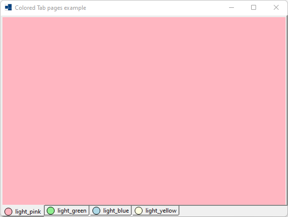
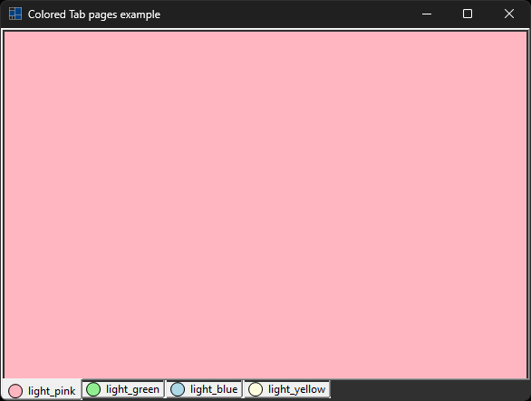
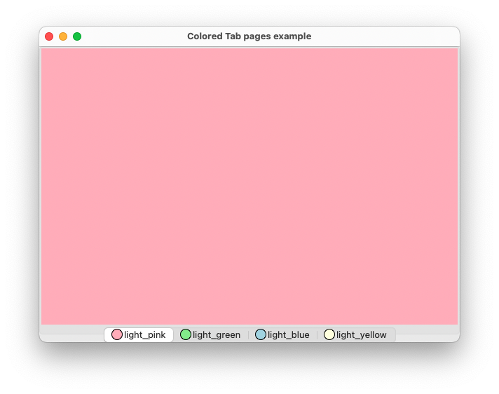
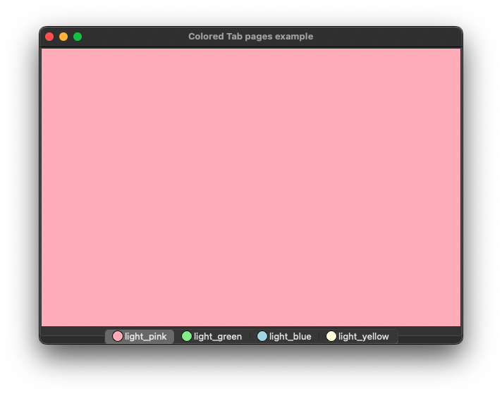
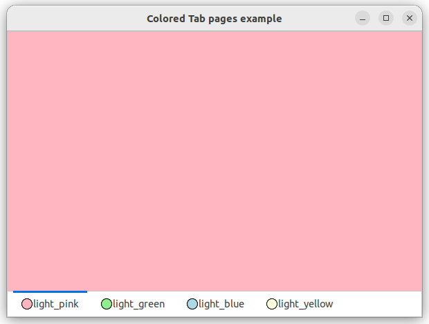
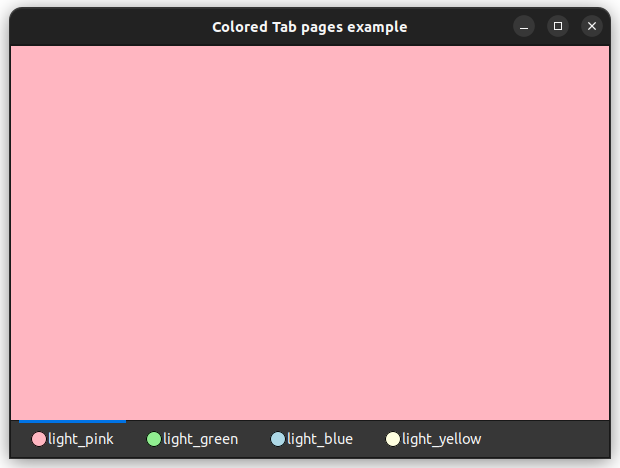

|
xtd
0.2.0
|
Loading...
Searching...
No Matches
colored_tab_pages.cpp
demonstrates the use of xtd::forms::tab_page control with unicode text.
- Windows
- 

- macOS
- 

- Gnome
- 

#include <xtd/drawing/colors>
#include <xtd/drawing/pens>
#include <xtd/forms/application>
#include <xtd/forms/form>
#include <xtd/forms/tab_control>
#include <xtd/forms/tab_page>
#include <xtd/cdebug>
using namespace std;
using namespace xtd;
using namespace xtd::drawing;
using namespace xtd::forms;
public:
form1() {
text("Colored Tab pages example");
controls().push_back(colored_tab_control);
size({600, 450});
color_image_list.image_size({16, 16});
for(auto color : {colors::light_pink(), colors::light_green(), colors::light_blue(), colors::light_yellow()}) {
color_image_list.images().push_back(image_from_color(color_image_list.image_size(), color));
auto colored_tab_page = make_unique<forms::tab_page>();
colored_tab_page->image_index(colored_tab_pages.size()).parent(colored_tab_control).text(color.name()).back_color(color);
colored_tab_pages.push_back(std::move(colored_tab_page));
};
colored_tab_control.image_list(color_image_list);
colored_tab_control.dock(dock_style::fill);
colored_tab_control.alignment(tab_alignment::bottom);
}
private:
auto g = graphics::from_image(colored_bitmap);
g.draw_ellipse(pens::black(), 0, 0, colored_bitmap.width() - 1, colored_bitmap.height() - 1);
return colored_bitmap;
}
image_list color_image_list;
tab_control colored_tab_control;
vector<unique_ptr<tab_page>> colored_tab_pages;
};
auto main()->int {
application::run(form1 {});
}
Encapsulates a GDI+ bitmap, which consists of the pixel data for a graphics image and its attributes....
Definition bitmap.h:26
xtd::ustring name() const noexcept
Gets the name of this xtd::drawing::color.
Stores an ordered pair of integers, which specify a height and width.
Definition size.h:31
Defines a xtd::drawing::brush of a single color. Brushes are used to fill graphics shapes,...
Definition solid_brush.h:30
Represents a window or dialog box that makes up an application's user interface.
Definition form.h:52
Provides methods to manage a collection of xtd::drawing::image objects. This class cannot be inherite...
Definition image_list.h:28
The xtd::drawing namespace provides access to GDI+ basic graphics functionality. More advanced functi...
Definition actions_system_images.h:11
The xtd::forms namespace contains classes for creating Windows-based applications that take full adva...
Definition about_box.h:13
The xtd namespace contains all fundamental classes to access Hardware, Os, System,...
Definition system_report.h:17
Generated on Fri Dec 1 2023 09:43:49 for xtd by Gammasoft. All rights reserved.